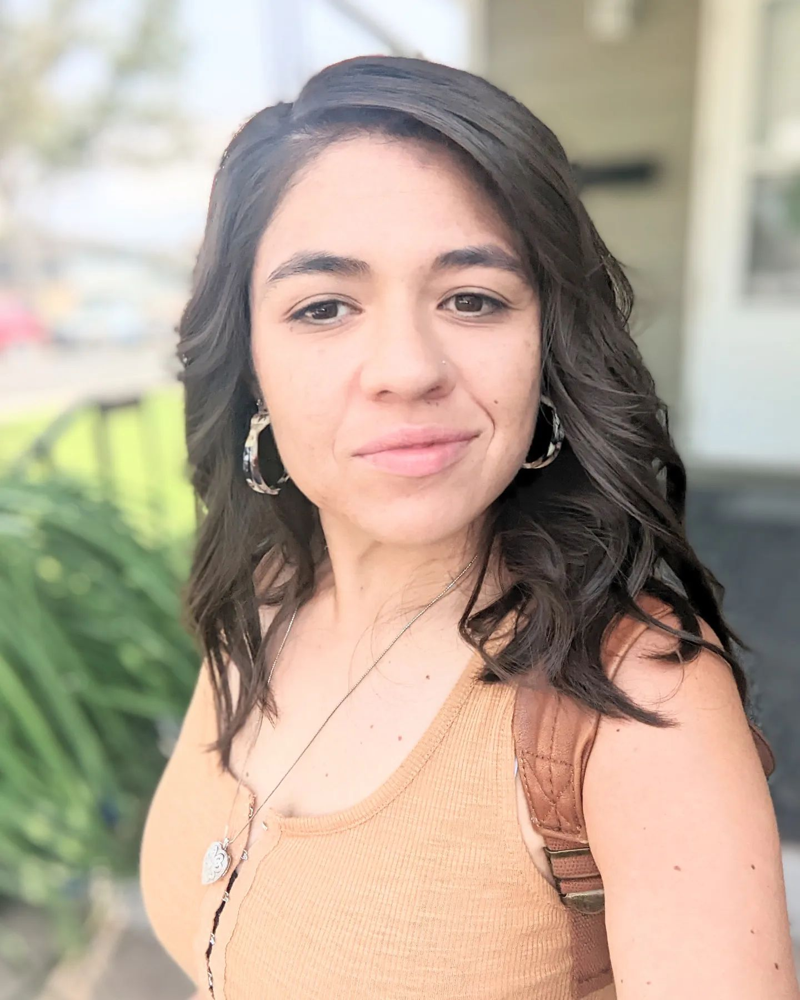

Stevie is a wife, mom, business owner, manager, server, bartender, athlete, artist, gardener, and music lover, and is passionate about skincare. Stevie’s focus is on her mental health and family. She has her best friend and husband, Nate, and her 3 children, which are the center of her world. She enjoys gardening and cooking those garden veggies with her husband. She loves having her family enjoying her food around the dinner table. Her greatest accomplishment is her children and the people they are turning into while being able to maintain a strong bond with Nate. She focuses on her mental health by taking the time to exercise, read, and paint. Exercising regularly is an important part of her life and she stresses that it has increased her mental health tremendously. She also focuses on her mental well-being by reading fiction books and listening to country music. Her goal in life is to create a life with no worries. She is currently employed as a merchandiser of clothing at a local retailer. She runs her own business selling Rodan and Fields skincare products, and she loves that this job brings her closer to people. She is a manager at the local Brewery and Bar where she gets to meet people from all over the world. Her hobbies are running, working out at the gym, softball, painting, reading, gardening, and music. She recently has gotten into gardening over the last few years and has a beautiful outside setup of plants and flowers. She started playing softball as a child and hasn’t stopped since. She participated in the sport throughout her school career and then played coed as an adult. She now spends her time coaching her children’s softball/baseball teams with Nate.

-Stevie